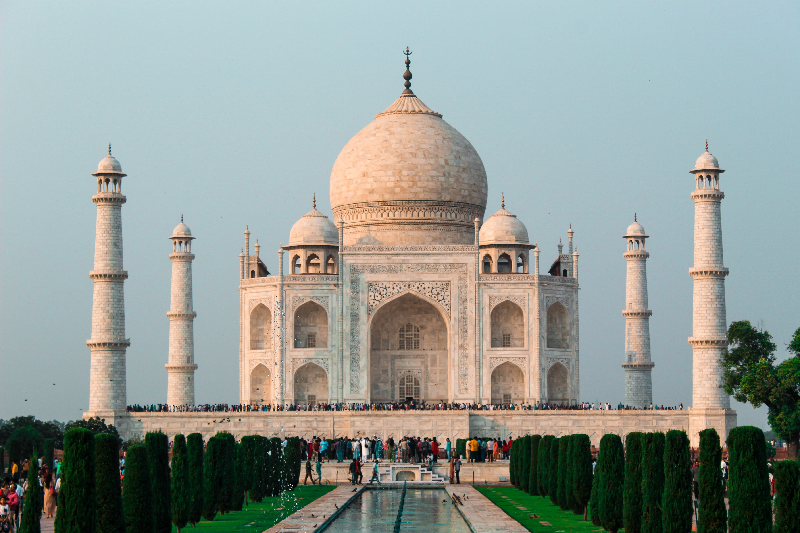

|  | Индия |
|
вступление
ДЕНЬ СЕДЬМОЙ Этот день мало чем отличался от предыдущего, только у нас закончились местные деньги, и мы пошли в разменник. Моя мама всю жизнь хотела попробовать напиток из кокоса и на обратном пути нам посчастливилось встретить "ларек", где можно было его купить, что мы и сделали. В остальном день не отличался от прошлого. |